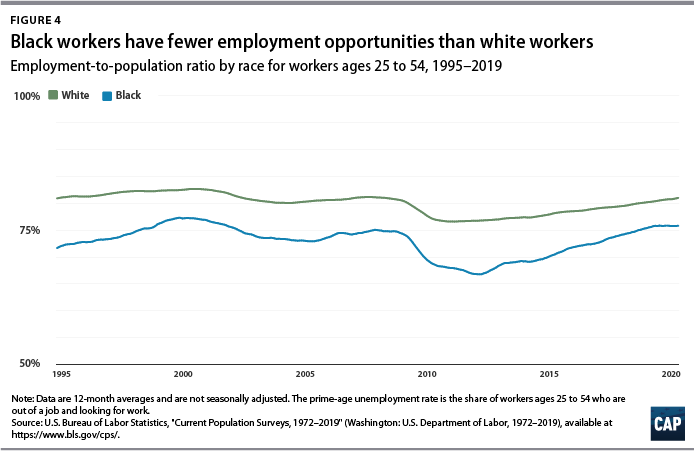
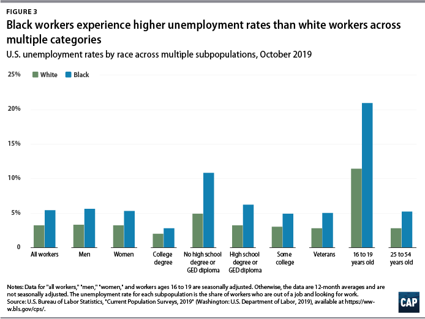

KinConnect
Our Philosophy
At KinConnect we strive to improve the quality of live of black people. In order to do so, we decided to tackle two important problems which are the discrimination present within the fields of healthcare, education, and law and the lack of oportunities of employment given to people of color (POC). Therefore, people of their own race will feel more comfortable to open up about common struggles that POC suffer with another black person than somebody who does suffer from this issues. Through our website POC can contact black professionals who are therapists, tutors, or lawyers and become their client. Consequently, the listed black people's career will be benefited through exposure and more experience. These three professions were chosen since they all requiere a deep level of empathy, understanding and confidency bilaterally from the client to the professional.
Why is it helpful?
Finding black professionals is difficult due to the discrimination they are victims to in these spaces. Particularly, "In 2015, 86 percent of psychologists in the U.S. workforce were white, 5 percent were Asian, 5 percent were Hispanic, 4 percent were black/African-American and 1 percent were multiracial or from other racial/ethnic groups" (U.S. Census Bureau, 2015).
Moreover, according to a study made by U.S. Bureau of Labor Statistics (2020), "there is a persistent racial gap. The employed share of prime-age Black workers stood at 75.7 percent from November 2018 to October 2019, while it averaged 80.8 percent for white workers in this age group".
Other alarming data is that "Among college graduates, for example, the Black unemployment rate averaged 2.8 percent from November 2018 to October 2019, 40 percent higher than the 2 percent rate for white college graduates in the same period" (U.S. Bureau of Labor Statistics, 2020)
So, by providing a space where black professionals are listed, it would be a easier way for other POC to contact them. This will also lead to exposure of the professionals to other prospects, which will boost their careers.
Our Values
Our values include diversity, inclusion, integration, and kindness.
Reference
U.S. Census Bureau. (2015). American Community Survey 1-Year PUMS file. Retrieved from www.census.gov/programs-surveys/acs/data/pums.html. "Other" racial/ethnic groups included American Indian/Alaska Native, Native Hawaiian/Pacific Islander, and people of two or more races. U.S. doctorate holders included individuals in the workforce with a doctoral/professional degree in any field. Total may not sum to 100 percent due to rounding.